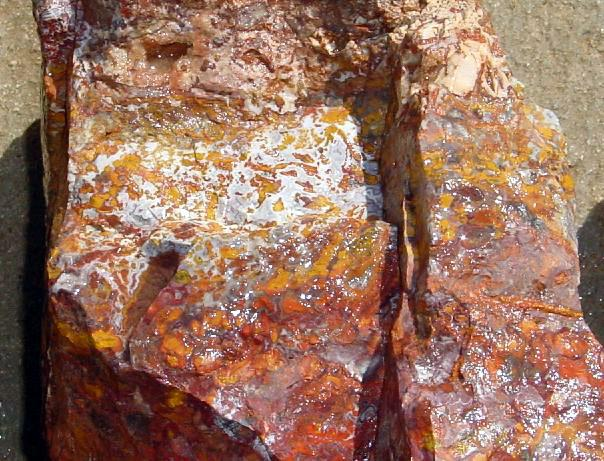

Morocco
Jasper Rough
MOROCCAN
JASPER
Moroccans
are known the world over for finding and supplying the world with
fossils of all kinds. They are now finding that there is certain
host rock materials are becoming just as valuable to them for
the stone jewelry makers as the fossils.
I am proud to announce that we are now engaged with a company
that is now supplying us here at the shop with one of their newest
finds called, "Moroccan Jasper"! This material is a
jasper and agate mixture and its texture is just wonderful with
the patterns that are available. I fell head over heels the first
time I seen this material that is made up of agate and jasper
and man does it grow on you as a material that produces some of
the best foreign stone jewelry you can ever imagine.
I was first introduced to this material at the 2003 Madras Rock
and Gemstone show and was shown what the material has to offer
by way of a few cabs and a couple of spheres that the dealer displayed
privately. This material takes a mirror polish and as for patterns
it is tops as far as I am concerned. I was told that the material
is a by-product of the fossil diggings that are being conducted
in Morocco.
This material is not that expensive and I have only larger pieces
because to be able to offer this material to my clients at a reasonable
price per pound. I have only larger pieces that start at about
20 pounds up to 100 pounds. I will not bust up or break up any
of the chunks of any of the pieces because it is that good and
it is a hard material to begin with. We will be getting this material
on a regular basis now when they have the material available to
ship to us.
I have some pictures of this material below to show you the different
patterns and colors that we have in stock. Granted, first come
first serve on this shipment that we have received.
Price is $6.00 per pound plus shipping!

Home|
Jasper | Agates
|Opal | Facet Materials |
Finished Gems | Finished Jewelry
Collectables & Collections
| Specials | Equipment
| People Stories
Ordering Info | E-mail
Us